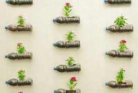
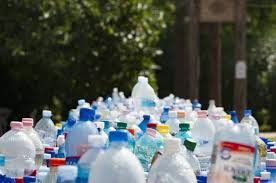
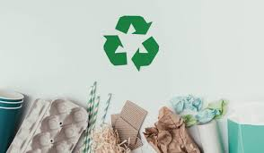
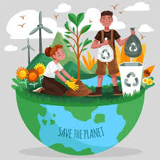
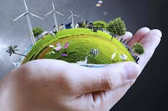
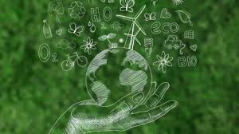
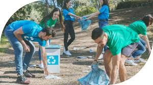

Las 3 erres nacieron en el año 2004, en una cumbre del G8, por impulso de Greenpeace y de Japón. La idea era promover la reducción de la generación de residuos y fomentar hábitos sostenibles que protejan el planeta.
La evolución de la sociedad ha hecho evidente que esas 3 iniciativas no son suficientes y se han ampliado a 7: rediseñar, reducir, reutilizar, reparar, renovar, recuperar y reciclar.
Las 7 erres son una iniciativa integral para preservar el cuidar el planeta y gestionar los recursos disponibles de la manera más adecuada para alargar la vida útil de los productos y evitar el derroche de esos recursos finitos.
Las 7 erres
Rediseñar.
La idea es que las empresas fabriquen productos sostenibles teniendo en cuenta su impacto en el planeta y su vida útil. Una opción sería usar materiales biodegradables para conseguir un equilibrio entre rentabilidad y funcionalidad.

Reducir
Generar menos residuos contaminantes, consumir menos en general. Lo más ecológico es usar menos, no reciclar lo usado.

Reutilizar
El fin es alargar la vida útil de las cosas, todas las cosas. El agua de lavar verduras puede usarse para regar plantas, ya que es un bien necesario y escaso. Lo mismo con ropa, compostaje, etc.

Reparar
Los objetos deben arreglarse siempre que sea posible para cumplir con esa ansiada premisa de alargar la vida útil de las cosas.

Renovar
No cambiar cosas viejas por nuevas, si no actualizar los objetos para darles un nuevo uso. Actualmente es muy común restaurar muebles que, además, ahorra dinero.

Recuperar
Volver a descubrir cosas que se tienen relegadas sin usar y convertirlas en algo útil como usar una lata de conservas como jarrón.

Reciclar
transformar materiales de desecho en nuevos productos o materiales, prolongando su vida útil y disminuyendo la necesidad de recursos naturales.
Si todo lo anterior no puede aplicarse, llega el momento de gestionar los residuos de manera correcta desechándolos en el contenedor adecuado.
